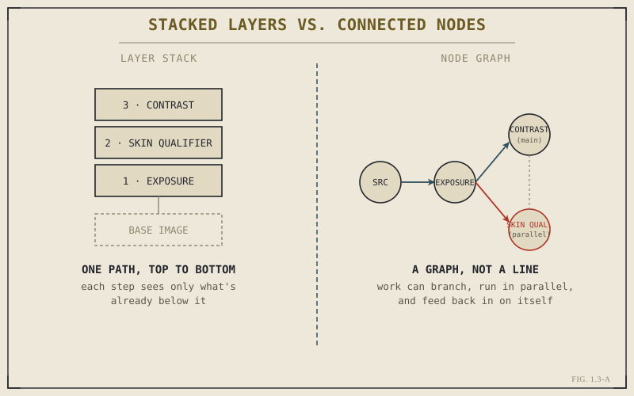

If you've used Photoshop, or any layer-based photo or design tool, you already have a mental model for how image edits usually stack: layers sit on top of each other, each one modifying what's beneath it, read from the bottom up. Resolve's Color and Fusion pages don't work that way, and the first time you open either one, the difference is disorienting — there's no stack of layers. There's a canvas full of boxes connected by lines. That's a node graph, and it's not a cosmetic alternative to layers. It's a genuinely different way of describing how an image gets built, and it's worth understanding on its own terms before you touch a single node.
Layers Describe a Line. Nodes Describe a Graph.
A layer stack is fundamentally linear. Layer three sits on layer two, which sits on layer one, which sits on the base image. Light and information can only flow one direction: upward, in a fixed order, each layer blind to everything except what's directly beneath it. If you want two different adjustments to both start from the original, untouched image — rather than one being built on top of the other's result — a pure layer stack makes that awkward. You end up duplicating the base layer, or reaching for layer groups and blend modes to fake something the model doesn't naturally support.
A node graph doesn't have this restriction, because it isn't a line — it's a graph. Any node's output can feed into any other node's input. Two separate adjustments can both branch off the same source node in parallel, get combined back together downstream, or run in a completely independent path that never rejoins the main one at all. The connections you draw between nodes are the actual structure of the edit, not an implied order based on stacking position.

A layer stack has one path. A node graph can branch, run in parallel, and rejoin.
Nodes aren't a more complicated way of doing what layers do. They're a way of expressing edits that layers structurally can't express cleanly — parallel, independent adjustments to the same source, combined explicitly rather than implied by stacking order.
Serial Nodes: The Default, Simple Case
Most of the time, especially when you're starting out, your node graph will look close to a straight line — one node feeding into the next, feeding into the next. This is called a serial connection, and it behaves almost exactly like a layer stack: the second node sees the result of the first, the third sees the result of the second, and so on. If all you ever built were serial chains, nodes would just be a differently-drawn version of layers.
A simple grading chain is a good example of serial thinking: one node handling overall exposure, feeding into a second node handling contrast, feeding into a third node handling an overall color tint. Each step refines what came before it. This is the majority of real-world node graphs, and it's exactly as approachable as it sounds — you're not required to build something exotic just because the tool supports it.
Parallel Nodes: What Layers Can't Do Cleanly
The power shows up once you need two adjustments that should both start from the same original image, independently, rather than one building on the other. A common example from color grading: you want a broad, subtle contrast adjustment across the whole frame, and separately, a skin tone qualifier that isolates and adjusts only skin — without the skin adjustment being affected by whatever the contrast node already changed, and without the contrast node seeing whatever the skin qualifier isolated.
In a node graph, this is straightforward: both nodes branch directly off the same source node, run their adjustments independently and in parallel, and then feed into a final node that combines both results. Each adjustment genuinely only sees the original image plus its own change — exactly what you asked for, with no fighting over stacking order or blend modes standing in for a relationship the tool doesn't otherwise support.
Why This Idea Shows Up Twice in Resolve
Chapter 1.2 mentioned that Fusion and Color share a structural idea, and this is it — both pages are built around node graphs, for the same underlying reason. Compositing (Fusion's job) and color grading (Color's job) both routinely need parallel, branching operations: a compositing node graph might process a foreground element and a background plate independently before merging them; a grading node graph might isolate skin, sky, and midtones as three separate parallel adjustments before a final combine. Layer stacks make this kind of branching workflow clumsy. Node graphs make it the default, native way of working.
You don't need to master node graphs in this chapter — Part IX walks through building real grades node by node, and Part X does the same for Fusion compositing. What matters right now is recognizing the shape of the idea when you see it, so that when you open the Color page for the first time and see boxes connected by lines instead of a familiar layer stack, it reads as a different, deliberate tool for a different kind of problem — not a more confusing version of something you already knew.
Key Concepts to Remember
- A layer stack is linear — one fixed order, each layer blind to everything but what's beneath it. A node graph is a graph — any node can feed any other node.
- Serial node chains behave like a layer stack — most everyday work is serial, and it's exactly as simple as it looks.
- Parallel nodes let two adjustments both start independently from the same source and combine explicitly downstream — something layer stacks fake with blend modes.
- Color and Fusion both use node graphs because compositing and grading both routinely need parallel, branching work — it's the same idea solving the same class of problem in two pages.
Cross-References Forward
| → Ch. 1.4 | Covers color management — the concept that determines what a node graph's adjustments are actually operating on. |
| → Pt. IX | The Color Page — where node graphs become a hands-on grading tool, node by node. (Not yet published.) |
| → Pt. X | The Fusion Page — the same graph structure applied to compositing instead of grading. (Not yet published.) |